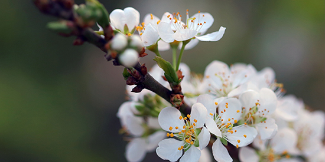

Blog Inspiration and Research
October 31, 2017
Today I received feedback regarding my wireframe and I feel like the critiques I got were understandable since there’s not enough information to gather currently from what’s being shown.
I did like the responsive pop-up as an aside that would follow you depending on where you are in the blog post, but I realized that it’s sort of a ‘read more’ or ‘up next’ tactic that a lot of social media uses so I might get rid of that entirely.
I’ve decided I want to make a blog that categorizes flowers similar to
Floret Flowers' site though I’m not sure what kind of other
content I would provide other than just different descriptions of flowers?
Maybe the blog would just be photos with some descriptions of flowers I saw
that day or something of that sort. Then it would look more like their
resources section.
